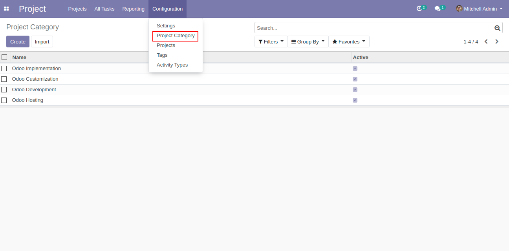

Project Category
Our module provides the feature to manage categories for projects and tasks.
so that will make easy for a user to filters project and task easily with categories.
Features
-
 Easy to manage and create categories.
Easy to manage and create categories.
- Easy to assign Category to the Project.
- Easy to filter Projects and task by Category.
- You can see project category in kanban view, list view, search view of project.
How It Works
-
Create Project Category.
-
Project Category created with status defined. set Active to False if you do not want that category in project and task.

-
Set the project categories from created active categories.
-
Kanban view of the project mentioned category of project. Can group by kanban view based on project category.
-
List view of the project Can group by list view based on project category.
-
Inside Task based on project selected, if the category defined in the project than the same project category will be filled in the task.
-
Kanban view of the task, mentioned category of the selected project. Can group by kanban view based on project category.
-
List view of the task, mentioned category of the selected project. Can group by list view based on project category.